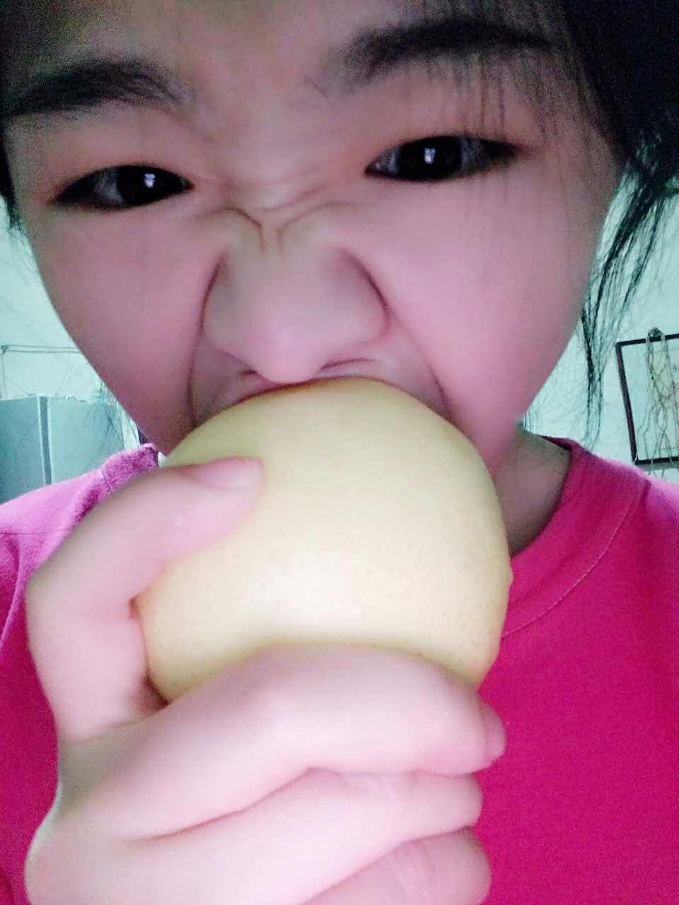
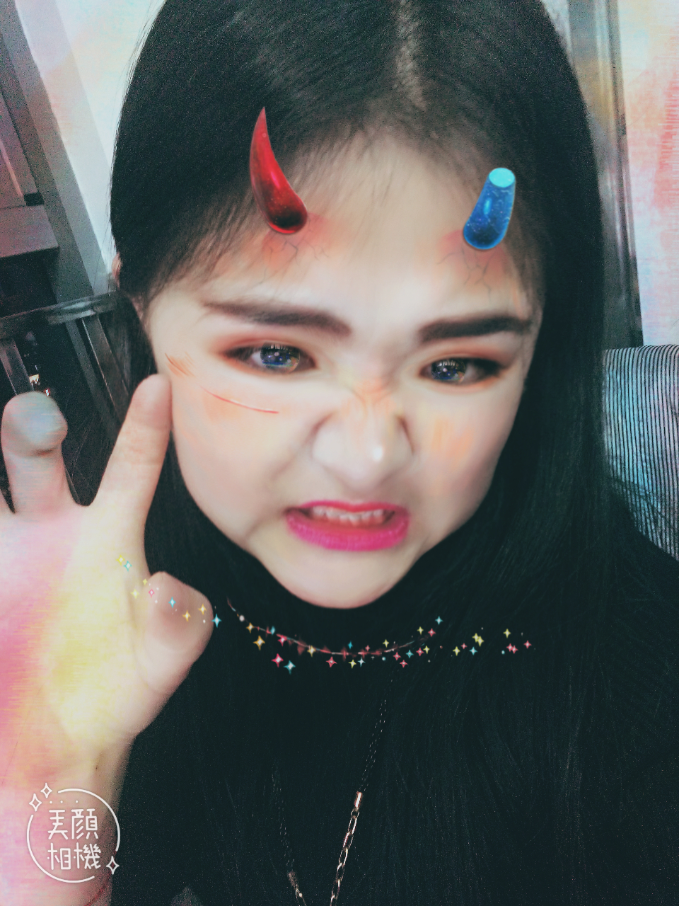
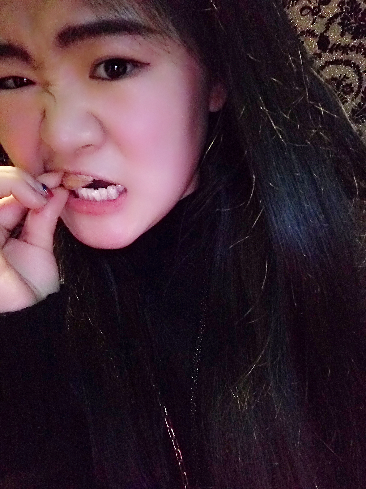
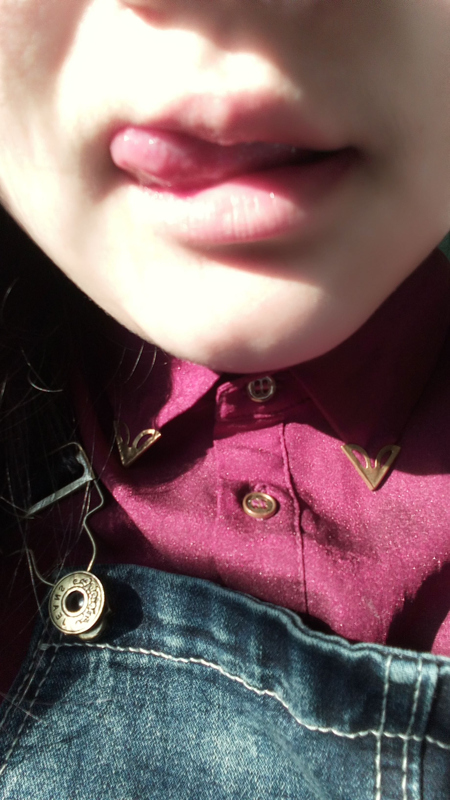
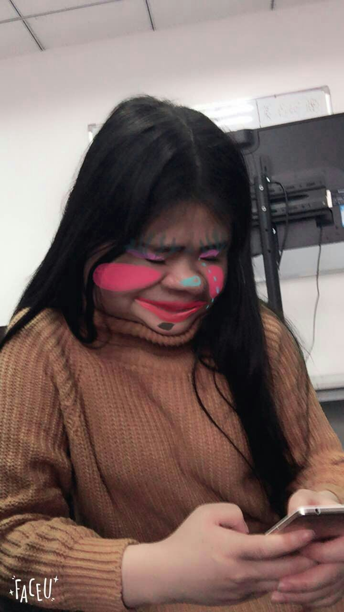

学名 Zhang jing
青争
分类为人科 一种高级动物，瞳孔很大，使光线益于入眼，对弱光也有良好的敏感性，适合夜间活动。
青争

Zhang jing
该物种的模式产地在北方地区 体形可达100厘米以上，腿强健有力，爪强锐，外观及其强悍。
可以使用水果

* 来喂养青争处于 饥饿中
的静

会变得狂躁
千万不要 惹她生气
换装之后的静罕见

坚硬的牙齿可以 轻易 撬开坚果
饲养须知 尤其喜爱, 辣味饮料 吸食 辣椒油中
模仿成年人装扮
擅长并热爱学习
食物能抑制其咬人的冲动
精致 而 有效的 咀嚼器官 咬合力 惊人*！


正常
情况下都以美貌示人
然而
生气时表情会发生扭曲
成年期 的静
会偶然结识伴侣 ，并且
不定期对其施加暴力
与伴侣在一起的静